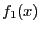
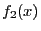
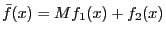

Next: Advanced user scaling Up: Tolerances and user-scaling Previous: Recommended ranges for variables
There are three common ways to improve ranges for objectives, constraints and variables:
Although presolve, and, in particular, bound strengthening, is quite good at deriving implied variables bounds, it may not have access to all of the information known to the modeler. Incorporating tighter bounds directly into the model can not only improve the numerical behavior, but it can also speed up the optimization process.
When defining your variables and constraints, it is important to
choose units that are consistent with tolerances. To give an
example, a constraint with a  right-hand side value is not
going to work well with the default
right-hand side value is not
going to work well with the default  feasibility tolerance.
By changing the units (e.g., replacing pounds with tons, or dollars
with millions of dollars, or ...), it is often possible to
significantly improve the numerics of the problems.
feasibility tolerance.
By changing the units (e.g., replacing pounds with tons, or dollars
with millions of dollars, or ...), it is often possible to
significantly improve the numerics of the problems.
A common source for very large range of objective coefficients is the
practice of modeling hierarchical objectives as an aggregation of
objective functions with large multipliers. For example, if the user
wants to optimize a problem with objective function  and
then, subject to being optimal, optimize , a common
trick is to use as surrogate objective
 where  is a large constant. When you combine a large
is a large constant. When you combine a large  with a relatively tight dual feasibility tolerance, it becomes much
harder for the solver to find solutions that achieve dual feasibility.
We recommend that you either use as small a constant
with a relatively tight dual feasibility tolerance, it becomes much
harder for the solver to find solutions that achieve dual feasibility.
We recommend that you either use as small a constant  as possible
or reformulate your model using a hierarchical objective (which
is made easier by our
multi-objective optimization
features).
as possible
or reformulate your model using a hierarchical objective (which
is made easier by our
multi-objective optimization
features).
These techniques are usually sufficient to eliminate the problems that arise from bad scaling.